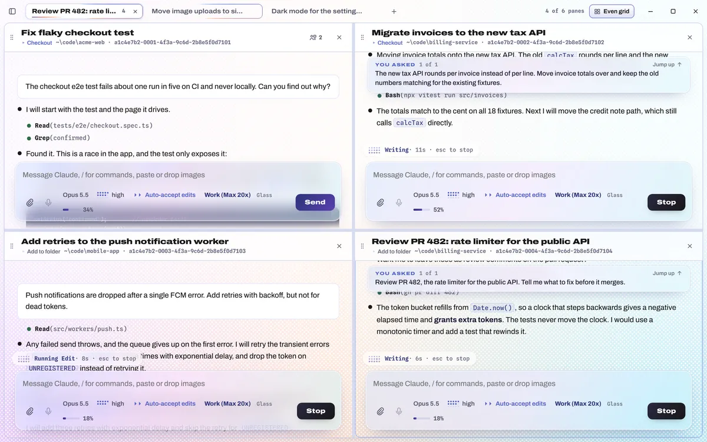
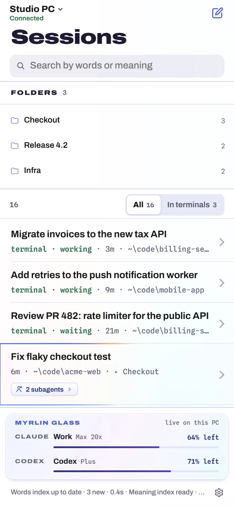
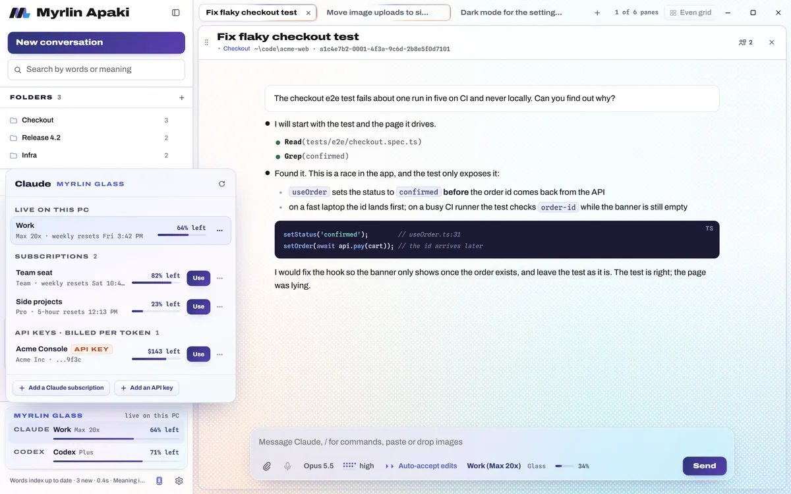
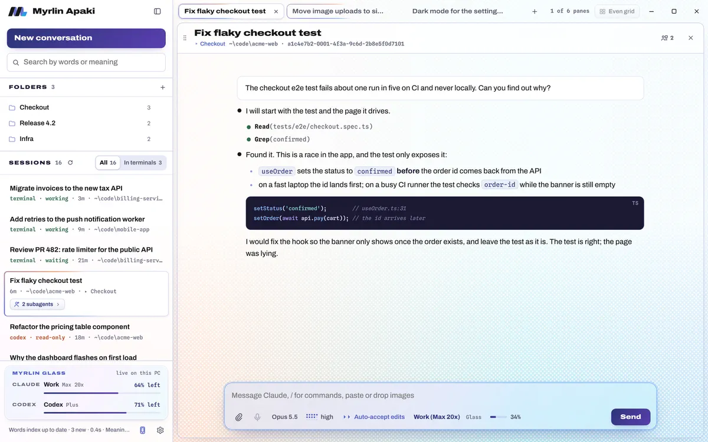
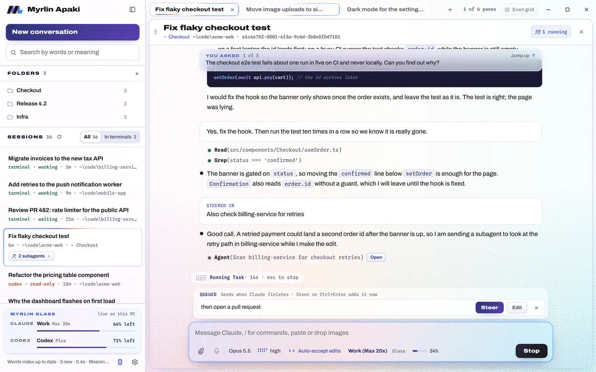
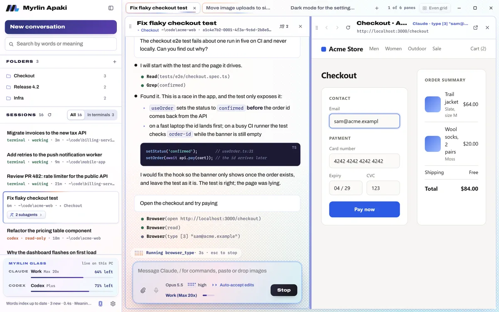
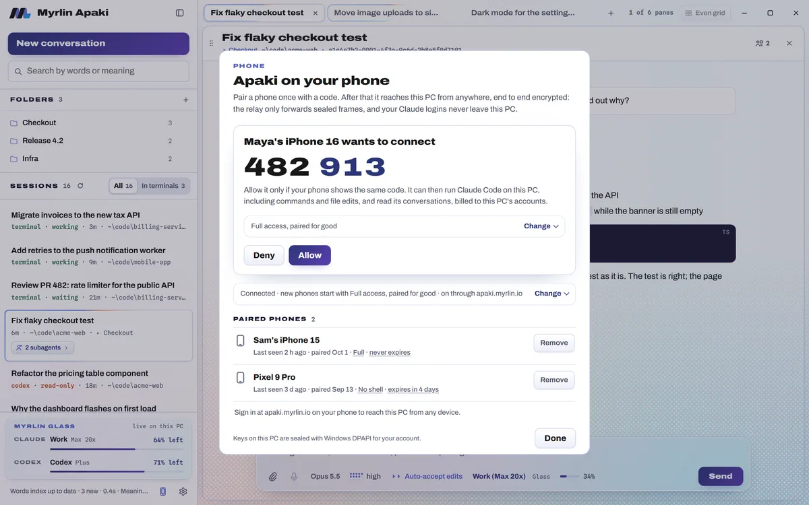
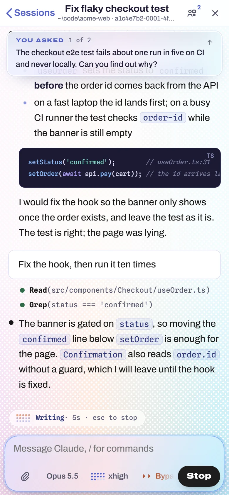

Codex, side by side
Codex threads open as panes next to Claude's, with Codex's own model, effort and approval choices, its questions and approvals as sheets, and the same browser pane and viewer.
Open source, free to use and to self-host
Every Claude Code session on your PC, in one window.
Apaki finds your sessions, switches accounts with Myrlin Glass, gives Claude a browser pane of its own, and puts your sessions on your phone through an encrypted relay. It is free and open source, and you can run the relay yourself.
For Claude Code on Windows. iPhone app in TestFlight. Codex sessions are listed today; Codex panes are coming. Read the source.


Recorded from the real app on made-up demo data.
The desktop app, the phone app and the relay live in one public repository. Apaki needs no account, and pairing a phone through our hosted relay costs nothing.
If you would rather not depend on us at all, the relay is a single Cloudflare Worker. Deploy it to your own account (the free plan is enough for a few people), point Apaki at it with two settings, and the phone page comes from your server instead of ours.
# relay/wrangler.jsonc: set "routes" to your hostname
cd relay
node ../apaki/scripts/build-web.mjs --release \
--relay wss://relay.example.com
npx wrangler deploy --env=""
# then start Apaki with
APAKI_RELAY_URL=wss://relay.example.com
APAKI_WEB_URL=https://relay.example.com/Myrlin Glass is built in. Its card at the bottom of the sidebar shows the live Claude and Codex accounts and how much each has left. Pick another subscription, or move to an Anthropic API key when a limit is close, and the conversation's billing follows. When Glass switches by itself, open conversations move with it before their next message.

Apaki reads Claude Code's own transcripts, so the list has the sessions you started in a terminal, headless runs and background workers too. A session open in a terminal window shows up within about two seconds, marked working or waiting, and opens in a pane with a click.

Shift-click a session to open it beside the others, or drag it onto the edge of a pane to split. Each pane is a full Claude Code conversation with its own model, effort and permission mode, and each one streams on its own.

Ask Claude to check a page and it opens in a browser pane beside the conversation. Claude reads the page as an outline of numbered links, buttons and fields, then clicks, types, goes back and takes screenshots while you watch the same page.

vite --open, or Python's webbrowser), the page opens in Apaki instead.Open the Phone sheet on your PC and scan its code with the Apaki iPhone app or your phone's camera. Both screens show the same six digits; you allow the phone on the PC, and it stays paired until you remove it. The phone gets the session list, the conversations and the same Claude Code that runs on the PC.


Phone access is end to end encrypted between your phone and your PC. Your PC never accepts incoming connections: it keeps one outgoing connection to the relay, and the relay forwards sealed frames it cannot open.
Your PC and your phone each hold their own keys. Between them, the relay passes along frames that only the two ends can open.
Where the trust sits. The phone web page is code that apaki.myrlin.io serves, as with any web app. Before your PC shows a pairing code, it builds that page from its own code and checks that the site serves exactly that, and while phone access is on it checks again every hour. The iPhone app carries its own copy of the code and loads none of it from our site. If you would rather not trust our site at all, run your own relay and page.
P-256 key exchange, AES-256-GCM, fresh keys for every connection. The one-time pairing secret travels only in the part of the QR link after #, which browsers never send to a server. Claude Code itself still talks to Anthropic as it always does; this encryption covers the path between your phone and your PC.
Security in plain words The full security review The protocol
Codex threads open as panes next to Claude's, with Codex's own model, effort and approval choices, its questions and approvals as sheets, and the same browser pane and viewer.
Start a conversation in a new git worktree, see your work grouped by repository and branch, and view changes, commit, push or open a pull request from the pane. The phone gets the same.
Sign in from any browser and leave nothing behind, a Cloud button on the desktop that lists your machines, and a push to your phone when Claude asks or finishes. A paid option on our relay; a relay you run gets every feature.
The desktop app, with Claude Code and Myrlin Glass in the package. Sign in with Claude Code's own login, or use an Anthropic API key.
Download for WindowsPairs with your PC by scanning its code and keeps its key in the Secure Enclave. In TestFlight now; the App Store comes later.
TestFlight is by invite for now.
Runs in any phone browser. Pair it from your PC's Phone sheet, or sign in with your passkey to see your PCs.
Open the web appNo. Apaki is a Myrlin Labs project and is not affiliated with or endorsed by Anthropic or OpenAI. It runs the Claude Code you sign in to with your own account.
No. Apaki runs Claude Code unmodified through Anthropic's Agent SDK, with Claude Code's own system prompt and every settings source, so your CLAUDE.md, skills, plugins, hooks, MCP servers and slash commands work as they do in a terminal.
Apaki is free, and so is pairing a phone through our relay. Your Claude and Codex usage is billed by Anthropic and OpenAI as usual. Apaki Cloud, when it ships, will be a paid option on our hosted relay; a relay you run yourself gets the same features at no cost.
Claude Code talks to Anthropic as it always does. Search, its index and its embedding model run locally. With phone access on, encrypted frames pass through the relay; without it, Apaki makes no connection to us.
The desktop app is for Windows. The phone side is the iPhone app (TestFlight for now) or the web app in any phone browser.